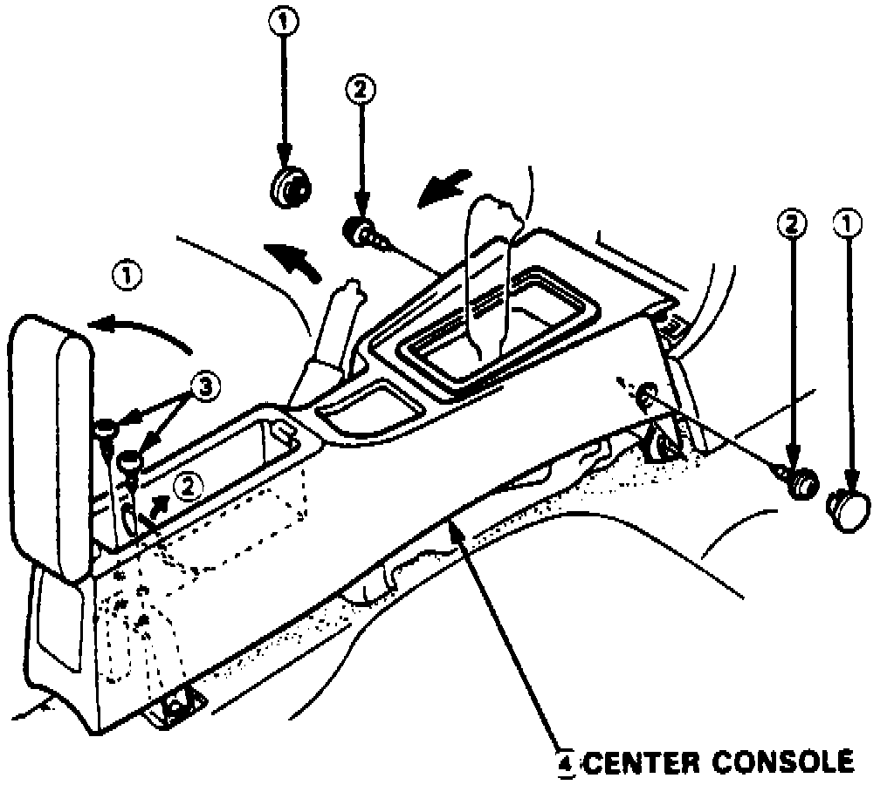
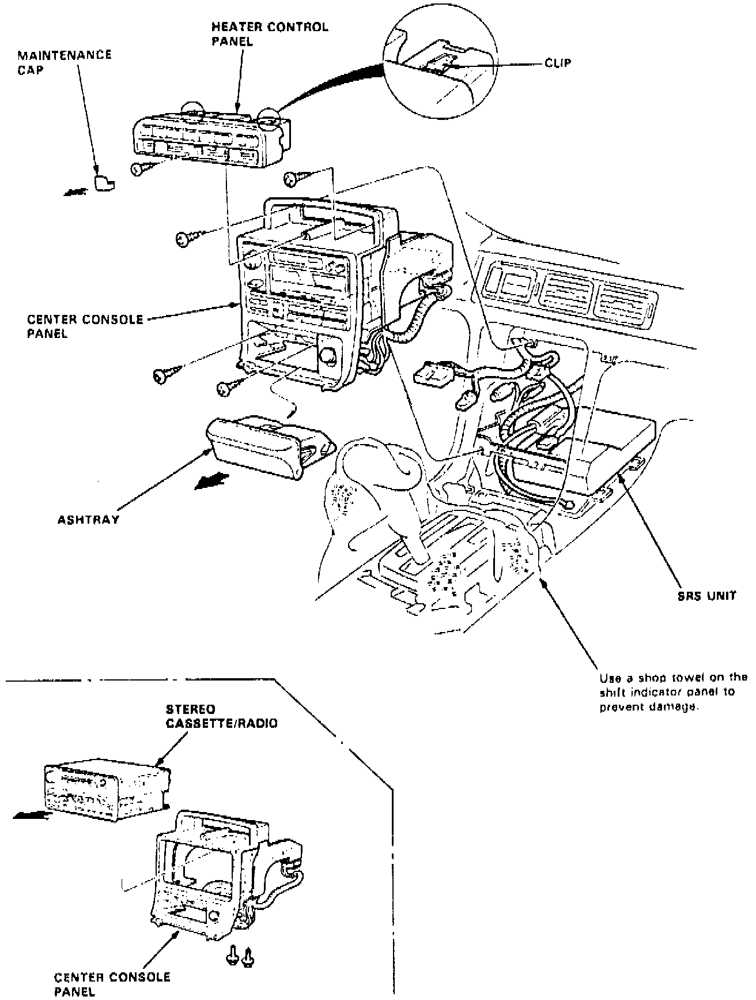
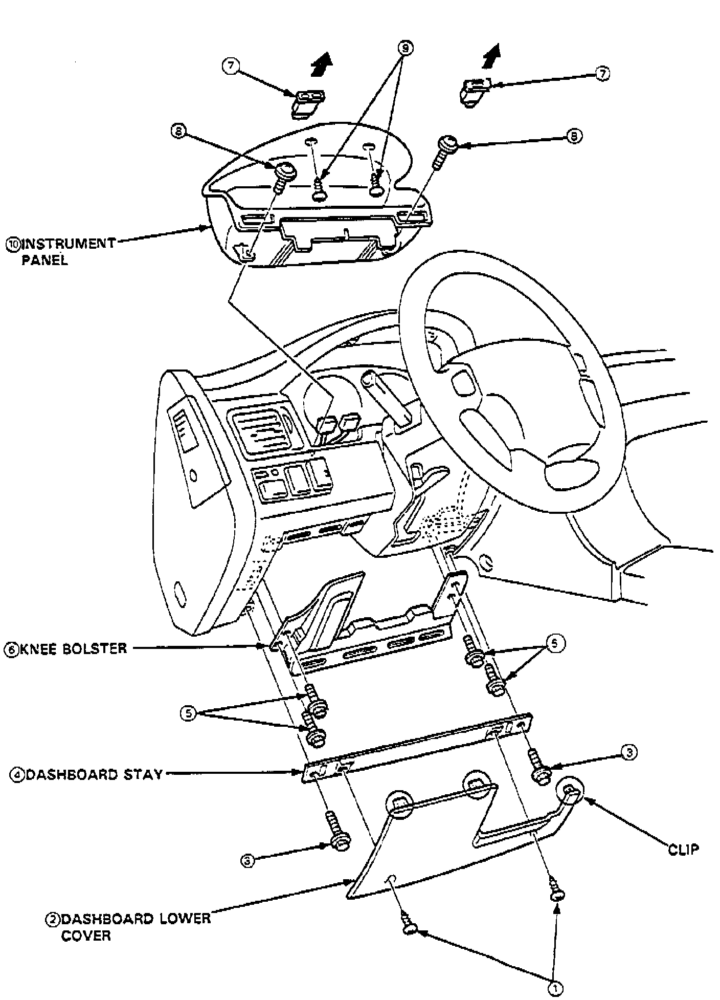
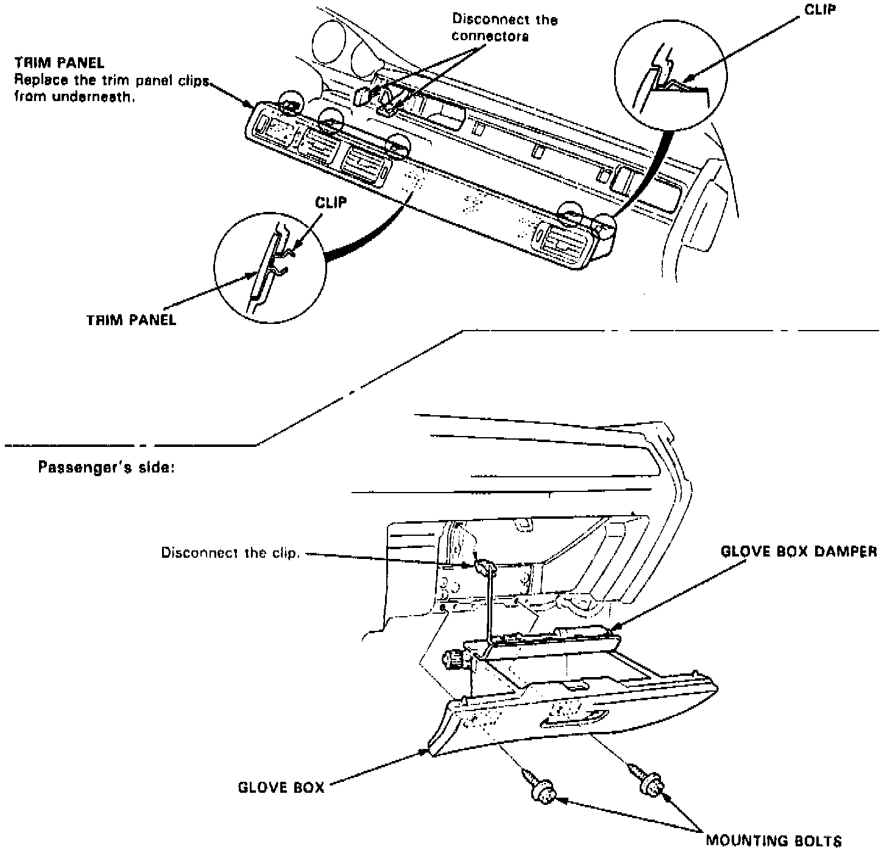
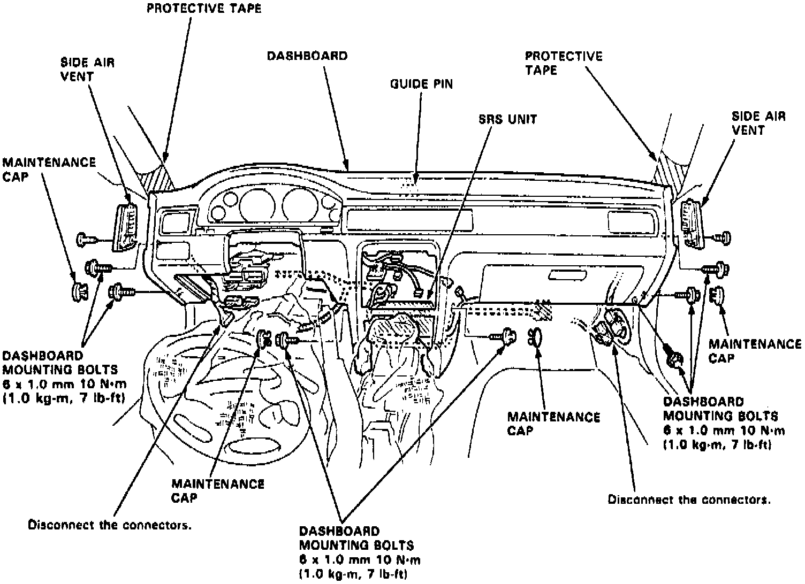

Dashboard / Instrument Panel: Service and Repair
1. On models equipped with radio coded theft protection system, refer to Vehicle Damage Warnings for system disarming and arming procedures. On models equipped with airbag system, refer to Technician Safety Information for system disarming and arming procedures.2. Remove front seat assemblies.
Fig. 15 Center Console Removal:

3. Remove center console, Fig. 15.
Fig. 16 Center Console Panel Removal:

4. Remove center console panel, Fig. 16.
Fig. 17 Dash Panel Lower Cover, Knee Bolster & Kickpanel Removal:

5. Remove dash board lower cover, knee bolster and kick panel, Fig. 17.
Fig. 18 Trim Panel, Glove Compartment & Glove Compartment Damper Removal:

6. Remove trim panel, glove compartment and glove compartment damper, Fig. 18.
7. Wrap steering column in suitable shop towel, then lower steering column.
8. Remove side vent attaching screws, then remove.
Fig. 19 Dash Panel Removal:

9. Disconnect electrical connectors, Fig. 19, then remove panel attaching bolts, remove dash panel.
10 Reverse procedure to install, noting the following:
a. Ensure dashboard fits into guide pins correctly.
b. Before tightening dashboard bolts, ensure wires are free and not pinched.
11. On models equipped with radio coded theft protection system, refer to Vehicle Damage Warnings for system disarming and arming procedures. On models equipped with airbag system, refer to Technician Safety Information for system disarming and arming procedures.